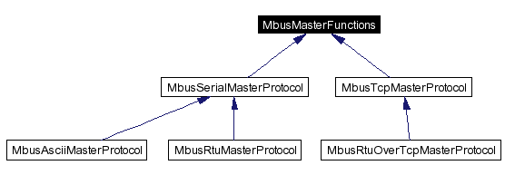

FieldTalk™ Modbus® Master Protocol Library
C++ Editions |
 |
General Description
Introduction
This FieldTalk™ Modbus® Master Library - C++ Editions are a C++ class library suite which provides connectivity to Modbus slave compatible devices and applications.
Typical applications are supervisory control systems, data concentrators and gateways, user interfaces and factory information systems.
Features:
- Robust design suitable for real-time and industrial applications
- Full implementation of Class 0 and Class 1 Modbus functions as well as a subset of the most commonly used Class 2 functions
- Support for Advantec ADAM 5000/6000 Series Commands
- Standard Modbus boolean and 16-bit integer data types
- Support for 32-bit integer, modulo-10000 and float data types
- Configurable word alignment for 32-bit types (big-endian, little-endian)
- Support of Broadcasting
- Failure and transmission counters
- Transmission and connection time-out supervision
- Detailed transmission and protocol failure reporting using error codes
- Multi-platform design
- Scalable: you can use serial protocols only or TCP/IP or all of them
- Customized modifications and development of add-ons available
Library Structure
The library is organised into one class for each Modbus master protocol flavour and a common base class, which applies to all protocol flavours. Because the two serial protocols ASCII and RTU share some common code, an intermediate base class implements the functions specific to serial protocols.

The base class MbusMasterFunctions contains all protocol unspecific functions, in particular the data and control functions defined by Modbus. All protocol flavours inherit from this base class.
The class MbusAsciiMasterProtocol implements the Modbus ASCII protocol, the class MbusRtuMasterProtocol implements the Modbus RTU protocol. The class MbusTcpMasterProtocol implements the MODBUS/TCP protocol and the class MbusRtuOverTcpMasterProtocol the Encapsulated Modbus RTU master protocol (also known as RTU over TCP or RTU/IP).
In order to use one of the three master protocols, the desired protocol flavour class has to be instantiated:
After a protocol object has been declared and opened, data and control functions can be used:
Overview